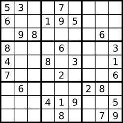

Название задания
Описание
Необходимо определить является ли матрица 9 x 9 правильно заполненым полем судоку. При проверке учитывать только заполненые цифрами ячейки. Правильной считается судоку в которой выполняются все правила:
- Каждая строка содержит числа
1-9без повторений. - Каждая колонка содержит числа
1-9без повторений. - Каждый
3-3под-квадрат содержит числа1-9без повторений.
Дополнительно:
- Судоку может быть (частично заполнена) коректной, но не обязательно иметь решение.
- Необходимо проверять только ячейки заполненые цифрами, ячейки заполеные "." необходимо считать пустыми.
Пример 1:
Входные данные: board =
Выходные данные: false[["8","3",".",".","7",".",".",".","."] ,["6",".",".","1","9","5",".",".","."] ,[".","9","8",".",".",".",".","6","."] ,["8",".",".",".","6",".",".",".","3"] ,["4",".",".","8",".","3",".",".","1"] ,["7",".",".",".","2",".",".",".","6"] ,[".","6",".",".",".",".","2","8","."] ,[".",".",".","4","1","9",".",".","5"] ,[".",".",".",".","8",".",".","7","9"]]
Объяснение: число 8 в левом верхнем углу дублируется в колонке и под-квадрате
Пример 2:

Входные данные: board =
Выходные данные: true[["5","3",".",".","7",".",".",".","."] ,["6",".",".","1","9","5",".",".","."] ,[".","9","8",".",".",".",".","6","."] ,["8",".",".",".","6",".",".",".","3"] ,["4",".",".","8",".","3",".",".","1"] ,["7",".",".",".","2",".",".",".","6"] ,[".","6",".",".",".",".","2","8","."] ,[".",".",".","4","1","9",".",".","5"] ,[".",".",".",".","8",".",".","7","9"]]
Пример 3:
Входные данные: board =
Выходные данные: true[["1","2","3","4","5","6","7","8","9"] ,["7","8","9","1","2","3","4","5","6"] ,["4","5","6","7","8","9","1","2","3"] ,["9","1","2","3","4","5","6","7","8"] ,["6","7","8","9","1","2","3","4","5"] ,["3","4","5","6","7","8","9","1","2"] ,["8","9","1","2","3","4","5","6","7"] ,["5","6","7","8","9","1","2","3","4"] ,["2","3","4","5","6","7","8","9","1"]]
Идея решения
Нам необходимо собрать по 9 массивов, представляющие строки, колонки и под-квадраты. В каждом из массивов не должно быть дупликатов. Для примера 2(с картинкой) первой строкой был бы массив [5, 3, 7], поскольку в первой строке встречаются только эти числа. Так как в первой строке дубликатов нет, можно переходить к следующей строке. Соответственно, первой колонкой(столбцом) будет [5, 6, 8, 4, 7], а под-квадратом будет [5, 3, 6, 9, 8].
В самом простом варианте, мы несколько раз пройдём по полученому board для получения строк, колонок и под-квадратов. Затем пройдём по этим данным и проверим, что в каждом отдельном массиве нет дубликатов.
Вот несколько особеностей, которые могут помочь улучшить алгоритм:
* Данные гарантированно консистенты, board - всегда массив с 9 вложенными массивами с 9 значениями.
* Достаточно найти первое нарушение "корректности" судоку.
* По нумерации строки и колонки можно легко определить к какому подквадрату относится ячейка.
* Множества не могут хранить дубликаты и позволяют проверять вхождение значения за константное время.
Алгоритм решения
Эффективным решением будет проверять дубликаты сразу при проходе по board. Необходимо выделить место для хранения всех наборов чисел, для этого можно использовать хеш-таблицы, со значениями в виде множеств, которые будет вложены в общую хеш-таблицу. В случае, если в ряду, столбце или под-квадрате мы встречаем дубликат, то мы прерываем выполнение функции возвратом значения False.
Таким образом наш алгоритм выглядит так:
1. Выделяем необходимые структуры для хранения.
2. Итерируемся по всем строкам и вложенно по каждому значению.
3. Если значение является числом проверяем вхождение в текущий ряд, столбец и под-квадрат.
4. Если после перебора всего судоку небыло дубликатов - необходимо вернуть True.
Сложность
- По времени: \(O(N^2)\) n = len(board), учитывая консистентность данных \(O(1)\)
В ходе алгоритма мы перебираем весь полученный массив
boardи каждое значение вложенных массивов. Так как размер вложенных массивов равен размеруboardто в худшем случае, когда мы вернёмtrueпотребуетсяn * nвремени.
Однако, следует отметить, что все значения размеров известны заранее, так число n является константным(всегда равно 9). В следствии чего можно считать время работы скрипта константным и не превышающим конкретное количество действий.
- По памяти: \(O(N)\) n = len(board), учитывая консистентность данных \(O(1)\) Для нашего алгоритма используется 5 переменных, которые неизменяются во время работы алгоритма, затраты по памяти константны.
Так же мы выделяем хеш-таблицу, содержащую три вложенные хэш-таблицы, которые в свою очередь содержат множества, размер которых определяется количеством чисел в строках Судоку. В лучшем случае, когда таблица судоку пуста множества останутся пустыми. В худшем случае нам потребуется хранить 3 раза по 9 массивов по 9 чисел(243 числа). Учитывая, что мы знаем конкретное число, больше которого не может выделиться память, мы можем выделить её заранее и сложность будет константной, то есть \(O(1)\).
Код решения:
class Solution:
def isValidSudoku(self, board: List[List[str]]) -> bool:
rows, cols, recs, size, n = 0, 1, 2, 3, 9
store = {p: {k: set() for k in range(n)} for p in range(size)}
for i, row in enumerate(board):
for j, num in enumerate(row):
if num != '.':
k = j // size + i // size * size
if num in store[rows][j] | store[cols][i] | store[recs][k]:
return False
store[rows][j].add(num)
store[cols][i].add(num)
store[recs][k].add(num)
return True
use std::collections::{HashMap, HashSet};
impl Solution {
pub fn is_valid_sudoku(board: Vec<Vec<char>>) -> bool {
let (rows, cols, recs, size, n) = (0, 1, 2, 3, 9);
let mut store: HashMap<usize, HashMap<usize, HashSet<char>>> = HashMap::new();
for p in 0..size {
let mut inner_map = HashMap::new();
for k in 0..n {
inner_map.insert(k, HashSet::new());
}
store.insert(p, inner_map);
}
for (i, row) in board.iter().enumerate() {
for (j, num) in row.iter().enumerate() {
if *num != '.' {
let k = j / size + i / size * size;
if store.get(&rows).unwrap().get(&i).map_or(false, |set| set.contains(&num)) ||
store.get(&cols).unwrap().get(&j).map_or(false, |set| set.contains(&num)) ||
store.get(&recs).unwrap().get(&k).map_or(false, |set| set.contains(&num)) {
return false;
}
store.get_mut(&rows).unwrap().get_mut(&i).unwrap().insert(*num);
store.get_mut(&cols).unwrap().get_mut(&j).unwrap().insert(*num);
store.get_mut(&recs).unwrap().get_mut(&k).unwrap().insert(*num);
}
}
}
true
}
}